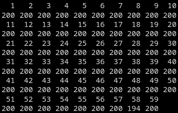

Bayesian modeling of comparative judgment data with R and Stan
![]()
University of Antwerp
University of Antwerp
University of Antwerp
2025-09-19
3.2 The Information-Theoretical model for CJ
The general CJ structure proposed by Rivera et al. [8] takes the following form:

\[ \begin{aligned} O_{R} & := f_{O}(D_{R}, S, C) \\ D_{R} & := f_{D}(T_{IA}, B_{JK}) \\ T_{IA} & := f_{T}(T_{I}, X_{IA}, e_{IA}) \\ T_{I} & := f_{T}(X_{I}, e_{I}) \\ B_{JK} & := f_{B}(B_{J}, Z_{JK}, e_{JK}) \\ B_{J} & := f_{B}(Z_{J}, e_{J}) \\ e_{I} & \:\bot\:\{ e_{J}, e_{IA}, e_{JK} \} \\ e_{J} & \:\bot\:\{ e_{IA}, e_{JK} \} \\ e_{IA} & \:\bot\:e_{JK} \end{aligned} \]
4.1 From Theory to Design: Steps 1a-1c
Thus, adapting the general CJ structure proposed by Rivera et al.’s [8] to the data characteristics reported by Boonen et al. [12] lead to the following conceptual population data-generating process:

\[ \begin{aligned} O_{R} & := f_{O}(D_{R}, S, C) \\ D_{R} & := f_{D}(T_{IA}, B_{JK}) \\ T_{IA} & := f_{T}(T_{I}, e_{IA}) \\ T_{I} & := f_{T}(X_{I}, e_{I}) \\ B_{JK} & := f_{B}(B_{J}) \\ B_{J} & := f_{B}(Z_{J}, e_{J}) \\ \\ e_{I} & \:\bot\:\{ e_{J}, e_{IA} \} \\ e_{J} & \:\bot\:\{ e_{IA} \} \end{aligned} \]
5.1.1 Data description
In a similar manner, the data indicates:
- Most individuals were compared \(200\) times (\(20\) comparisons × \(10\) stimuli each); only one individual (ID \(58\)) was compared slightly fewer times due to random design variation;
- The connected component analysis and individual comparison network indicates a fully connected network and a balanced design for individuals [25].


5.1.1 Data description
Moreover,
- Judges to individual comparison network indicates a fully connected network

5.1.1 Data description
Aggregated by individuals, we see some individuals with higher win rates than others:

5.1.1 Data description
Considering the interaction of age and hearing status groups,
- We notice a slightly decreasing trend in HI-HA and HI-CI children,
- This indicates that, in those groups, older children are less likely to win in a comparison.

References